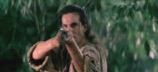

| Last
of the Mohicans (DTS)/A-,B |
| Fox/1992/117/ANA 2.35 |
This lush adaptation of Last of the
Mohicans follows the screenplay for the 1936 film very closely. Working in a rich color palette
in the hills of North Carolina, the production value of this Mohicans features extensive attention
to period detail, as well as sumptuous and exciting Widescreen photography.
The newest treatment of Hawkeye and his Mohican comrades
focuses more closely on the dynamics of an erupting love between the longhaired woodsman and the
eldest daughter of Colonel Munro, commander of the besieged Fort William Henry, than the earlier
leaner version did. Nevertheless, director Michael Mann packs the screen with an abundance of
martial action, some of it casually graphic in its depiction.
 |
| Daniel Day-Lewis on target as
Hawkeye. ©Fox |
The chase scenes are
clearly the most successful. Mann's grasp of movement through the woods and mountains is nothing
short of spectacular. The cutting of these scenes builds the action to an accelerating coda, echoed
by the strong Scottish strains of the pounding musical score by Trevor Jones.
Daniel Day Lewis gives Hawkeye a modern and natural
interpretation, which well suits Mann’s take on the Fennimore Cooper classic hero. Madelaine
Stowe is a lovely Cora Munro and she and Lewis play well together. The first couple of times I
watched Last of the Mohicans, I questioned the sudden eruption of passion between Hawkeye
and Cora Munro. This time out I could taste the sensuality between these two appealing actors. The
Last of the Mohicans gets better with each viewing. The romance is hotter, the action more
furious, and the stunning achievement of director Mann more evident. Two hours in the company of
Hawkeye, Cora, Magua and company moved with the grace of a deer fleeing through the forest.
The traditional villain in the piece, Magua, is given an
outstanding turn by Wes Studi. Studi seethes venom consistently and practically steals every scene
in which he appears. Indian activist Russell Means handles the role of Chingachgook with strength
and dignity, and although his lines are limited, his confidence of bearing speaks powerfully and
eloquently.
Oddly, I found the major battle sequences lacking in the power
they should have generated. The editing did not seem to provide a central point of view through
which the action could expand. The night photography was marginal, at best, in the theaters, and a
number of these dimly lit scenes did not transfer well onto video.
This is the second incarnation of Last of the Mohicans
on DVD. This time out the transfer is anamorphic and DTS Surround is offered along with Dolby
Digital. Is there more detail in the anamorphic transfer? Yes. Still, it's not as sharp as one
would hope for. A slight softness injects itself into scenes where utmost clarity is called for.
Low light segments offer a resolution challenge to begin with, and there are plenty of dark scenes
to deal with in Last of the Mohicans. Color is bright and rich in the day scenes. The DTS
Surround is consistently directional and exciting. The mix of music and ambience marries perfectly
with the images. Last of the Mohicans really packs bass firepower into this DVD
presentation. Some of the rifle shots are almost penetrating enough to wound an innocent home
theater viewer.
|
|
|
|

Selections from the Feature Archive
include articles on Akira Kurosawa, Frank
Darabont, Blonde Bimbos, Hollywood Street Gangs, or Vietnam: The
Hollywood Pariah, and many more....
A Western is a Western is a Western

Place or time it's still a Western from John Ford's Drums
Along the Mohawk to John Sturges' Bad Day at Black Rock.

The
Movie Poster Archive includes extensive poster images from the films of stars like Susan Hayward,
Kirk Douglas, Katharine Hepburn and many more. Our featured star is James Stewart
 
The American Widescreen Museum, is the ultimate resource for widescreen movie information, Martin
Hart's reliable site is a great tool for movie buffs.

Fine reviews, features and news on DVD. The Big Picture
has been doing DVD as long as anyone. Jeff McNeal and Bob Banka feed on a steady diet of DVDs.
 The online
site for Film Comment
Magazine includes all the information you need to know about cinematic events
sponsored by the Film Society of Lincoln Center. The online
site for Film Comment
Magazine includes all the information you need to know about cinematic events
sponsored by the Film Society of Lincoln Center.

Home to The American Society of Cinematographers. Includes features from
American Cinematographer Magazine and more...
|